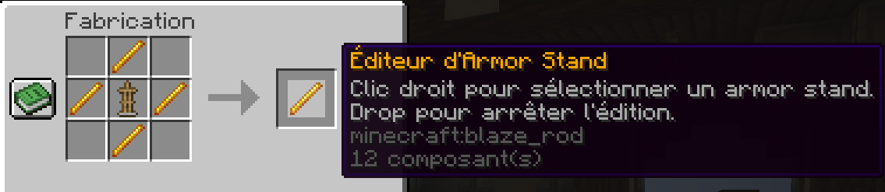
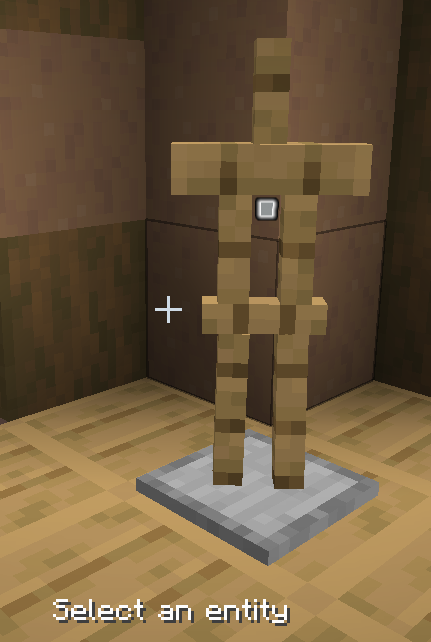
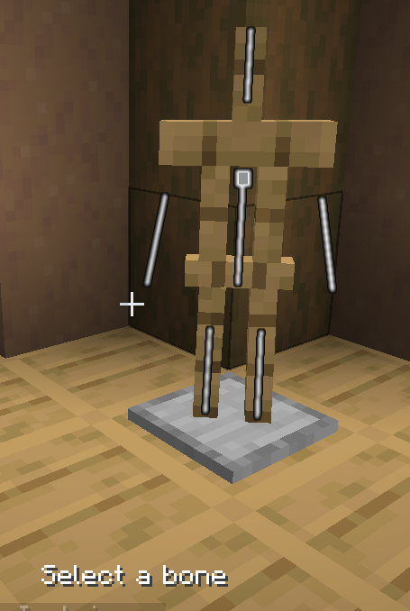
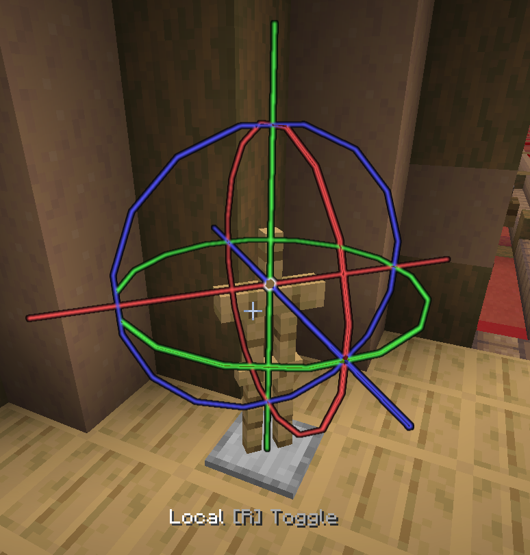
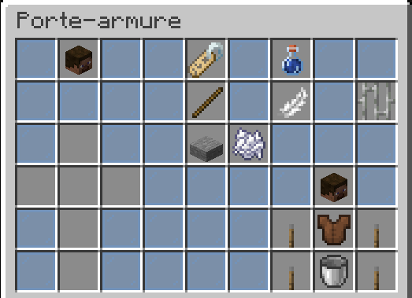
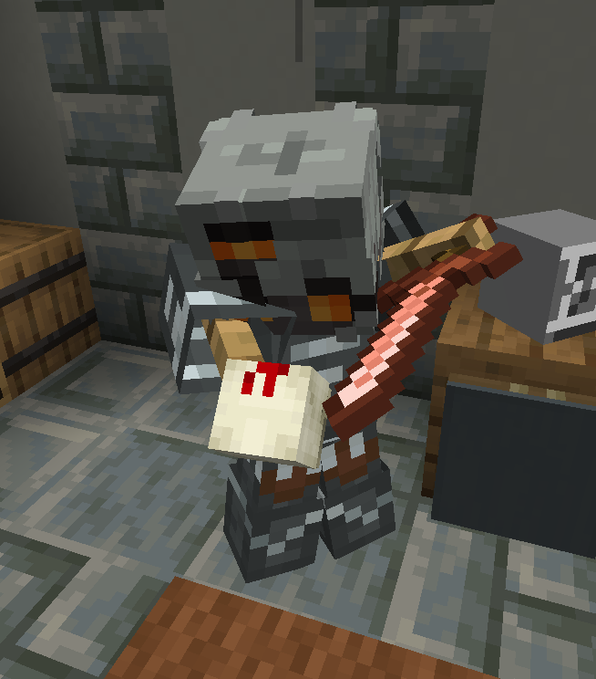
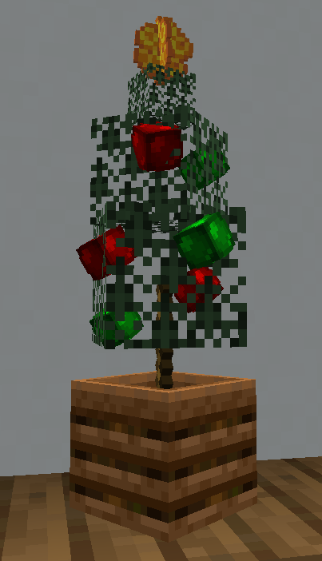

Les porte-armures personnalisés
Le plugin EasyArmorStand (EAS) permet de modifier facilement les porte-armures dans Minecraft sans utiliser de commandes. Tout se fait avec un outil spécial : le Bâton Éditeur.
Fabriquer le Bâton Éditeur
Le Bâton Éditeur se fabrique à la table de craft :

Utiliser le Bâton Éditeur
Tiens ton Bâton Éditeur en main, puis suis ces étapes.
1. Sélectionner le porte-armure
Fais un clic droit sur le petit carré lumineux pour sélectionner le porte-armure.

2. Choisir une partie à modifier
Une fois le porte-armure sélectionné, des barres virtuelles apparaissent au niveau :
- des bras
- des jambes
- de la tête
- du corps
- du petit carré lumineux au milieu du porte-armure
Pour choisir une partie, vise l'une de ces barres avec ton curseur et fais un clic droit.

3. Déplacer le porte-armure
De nouvelles barres apparaissent : ce sont les axes. Vise l'une d'elles et fais un clic droit, puis bouge ton curseur pour déplacer la partie.
💡 Astuce : accroupis-toi pour un déplacement plus précis.

Les options du porte-armure
Dans l'interface virtuelle, fais un clic gauche sur le petit carré lumineux pour ouvrir les options. Tu peux :

Mettre des couleurs dans un nom
Entoure le nom de la couleur avec < et >. Couleurs disponibles :
Tu peux aussi utiliser une couleur hexadécimale en ajoutant un # avant le code.
Exemple : <#FF7676>Bonjour !
⚠️ Le nom n'apparaît pas ? Sélectionne le porte-armure, puis tape la commande
/eas name visible true.
Idées de décoration
Voici quelques exemples simples de ce qu'on peut créer avec cet outil :


Pages liées
- Les Protections : les porte-armures peuvent être protégés avec
/lock - Monde Créatif : un endroit idéal pour s'entraîner